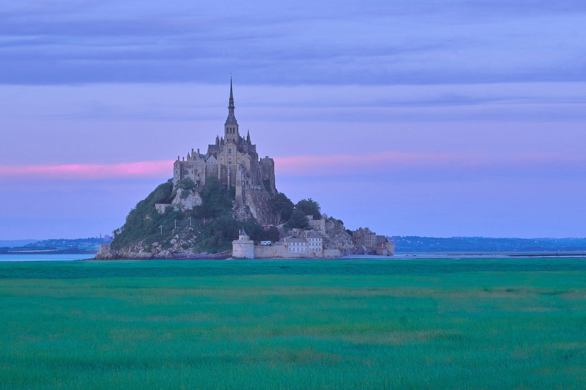
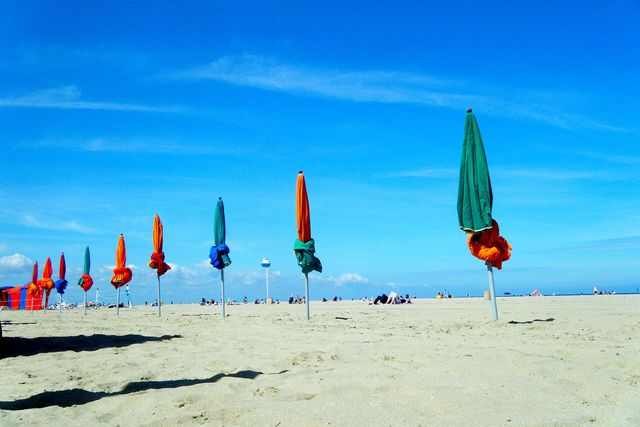
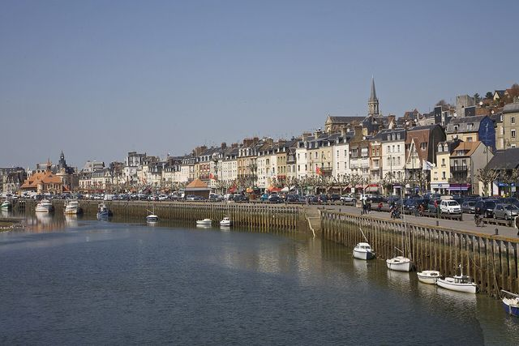
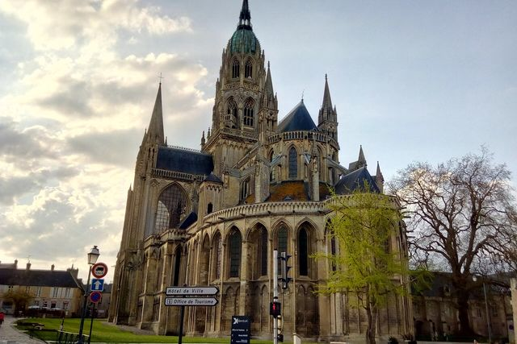
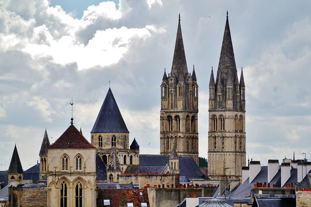

Visiting Normandy
Mont-Saint-Michel, the cliffs of Étretat, Honfleur harbour and the beaches of 6 June 1944: Normandy is the great getaway a few hours from Paris.
Photo: Alexander Van Steenberge / Unsplash
Normandy is home to some of the most visited sites in France: Mont-Saint-Michel, the chalk cliffs of Étretat, Honfleur’s Vieux Bassin and the D-Day beaches. Rouen, its capital, is 1 hour 20 from Paris by train.
The region can be visited all year round. Winter is the ideal season to avoid the crowds at Mont-Saint-Michel, and Rouen holds a Christmas market beneath its cathedral. Each guide gives opening hours, 2026 prices, access and our tips.
Normandy at a glance
| Place | What to see | Good to know |
|---|---|---|
| Mont-Saint-Michel | Abbey, village, tides | Abbey €13 low season, €16 high season |
| Étretat | Porte d’Aval, the Needle, Manneporte | No station: train to Le Havre then coach |
| Honfleur | Old Basin, St Catherine’s church | Eugène Boudin museum €9, closed Tuesdays |
| Caen | Memorial, castle, abbeys | Memorial €20.80 |
| Rouen | Monet’s cathedral, Gros-Horloge | 1 h 20 from Paris by train |
| Bayeux | Cathedral, old town | Tapestry at the British Museum until July 2027 |
Prices taken from official websites for 2026; each guide gives opening hours, access and our tips.
Rouen is an easy day trip from Paris by train. For the D-Day beaches, Bayeux is the best base, with Arromanches and Omaha Beach about 20 minutes away by car. Deauville and Trouville share the same station.
Rouen, Giverny and the coast, from Étretat to Deauville
-

Monet’s cathedral, the Gros-Horloge and the Christmas market, 1 hour 20 from Paris by train.
-

The Porte d’Aval, the Needle and the clifftop paths of the Alabaster Coast.
-

The Vieux Bassin, France’s largest wooden church and the harbour that inspired Monet.
-

Claude Monet’s house and gardens, the water lily pond and the Japanese bridge.
-

The Planches, colourful parasols and Trouville just opposite.
-

A fishing port, a fish market and a long beach, across from Deauville.


Bayeux, the D-Day beaches and Mont-Saint-Michel
-

Omaha Beach, Pointe du Hoc and the American Cemetery, the places of 6 June 1944.
-

The abbey on its islet, the medieval village and the great tides of the bay.
-

A Norman cathedral, an intact old town and the gateway to the D-Day beaches.
-

William the Conqueror’s city and the Second World War Memorial.


Normandy events in 2026-2027
The big upcoming event is the Rouen Armada, from 17 to 27 June 2027: more than 40 tall ships along the Seine, many of them open to visit for free. In Bayeux, the Tapestry is on show at the British Museum in London until 11 July 2027.
In winter, the Mont-Saint-Michel abbey opens from 9.30am to 6pm and the Mont is far less crowded. In Étretat, several cliff passages have been off limits since April 2025 because of the risk of rockfall, including the Trou à l’Homme.